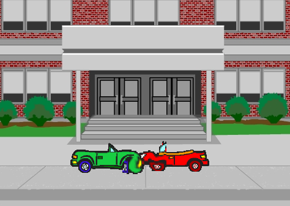
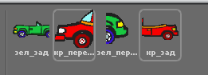
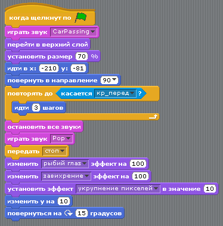
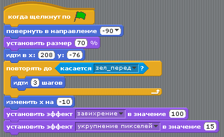
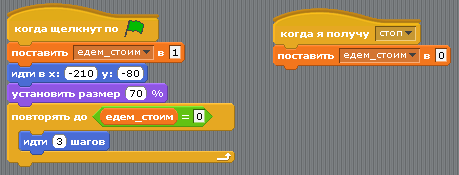
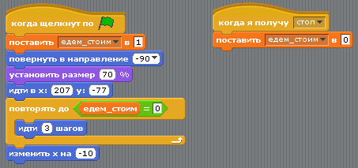

Столкновение
Задача
Организовать столкновение двух объектов (например, автомобилей), движущихся навстречу друг другу. Под столкновением понимать их остановку и изменение внешнего вида.

Особенности задачи
Когда машины сталкиваются, то у них изменяется только место столкновения (например, передняя часть). Если к объектам применять графические эффекты, то они изменят весь объект (от его центра), что нас не устраивает.
Поэтому каждая машина будет состоять из двух объектов: передней и задней частей. Для каждой машины на сцену следует добавить два его экземпляра. Затем каждый отредактировать: у одного удалить переднюю часть, у другого - заднюю.

Алгоритм решения
- Для одной из машин (обоих ее частей) добавить команду повернуть в направлении -90, чтобы развернуть ее в противоположную сторону. Не забыть включить кнопку "только поворот влево-вправо".
- Для каждой части автомобилей добавить команду установить размер 70%.
- Расставить части машин в исходную позицию. Для каждой части добавить команду идти в x... y.... При этом будут уже указаны правильные значения.
- Для передних частей добавить код: повторять до <касается...> идти 3 шагов. Передняя часть одной машины двигается, пока не касается передней части другой машины.
- Когда переднии части машин касаются друг друга, то должны передать сигнал (например, стоп) своим задним частям, чтобы те остановились. Достаточно, чтобы только одна передняя часть сгенерировала этот сигнал.
- Графические эффекты к передним частям машин добавляются после цикла повторять до ....
- Создать общую переменную (например, едем_стоим). Установить ее значение в 1 для задних частей машин.
- К задним частям машин добавить цикл повторять до <едем_стоим = 0> идти 3 шагов.
- К задним частям добавить отдельный скрипт: Когда я получу <стоп> поставить <едем_стоим в 0>. Таким образом, заднии части будут двигаться пока значение переменной равно 1. При получении сигнала значение переменной меняется и автомобили останавливаются.
Итоговые скрипты объектов
Передняя часть первой машины:

Передняя часть второй машины:

Задняя часть первой машины:

Задняя часть второй машины:
